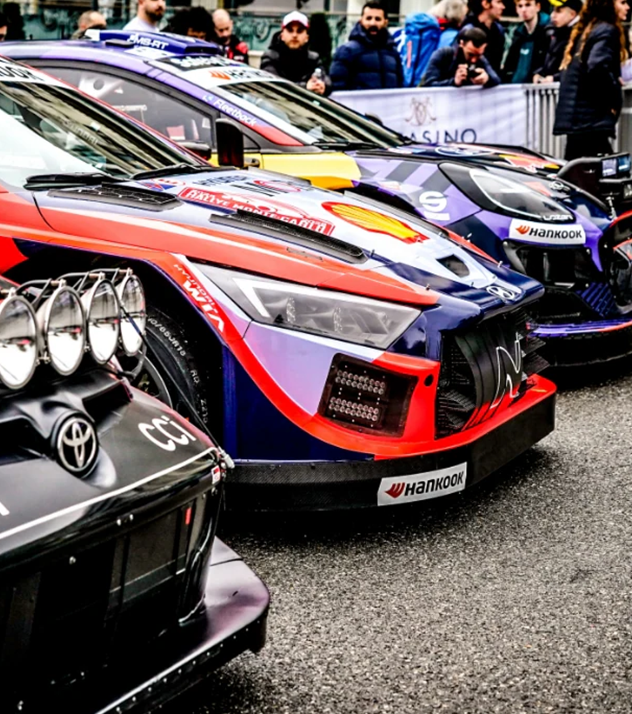

What is the WRC?
Established in 1973, the WRC is an epic battle against the elements and the clock. It is spread across multiple rallies covering four continents and 14 countries. Man and machine must master everything from snow-packed forest tracks in intense cold, to rock-strewn mountain passes in blistering heat.
WRC is the main championship category, WRC2 and WRC3 are support championship categories. Junior WRC is contested on selected events of the FIA World Rally Championship calendar.
Each rally features a number (typically between 15 and 25) of timed sections - known as special stages - on closed roads. Drivers battle one at a time to complete these stages as quickly as possible, with timing taken to 1/10th second. A co-driver reads detailed pace notes that explain the hazards ahead. Competitors drive to and from each stage on public roads, observing normal traffic regulations. The crew which completes all the stages in the shortest cumulative time is the rally winner. For the FIA World Rally Championships for Manufacturers, Drivers and Co-Drivers, the following points will be awarded at each rally: Points for the top 10 finishers based on the final classification will be awarded on a 25-17-15-12-10-8-6-4-2-1 basis.
Rallies follow the same basic structure. They start with two days of reconnaissance in which drivers and co-drivers practise the route at limited speed to make pace notes.
